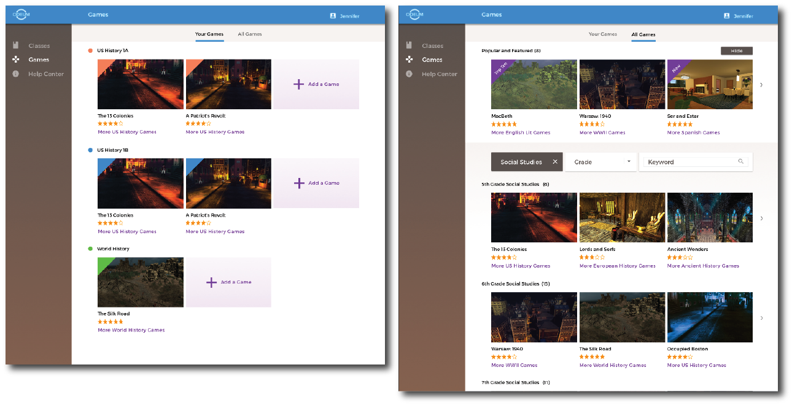

Making Gaming More Teacher Friendly
About: Odeum Learning is an educational gaming company based in Ann Arbor, Michigan, whose mission is to develop a platform for students to engage in their academics through role-play style games. Teachers are able to utilize Odeum's software in their classrooms with pre-made and/or customized games for their desired subjects.
Scope: Odeum Learning has 2 main target audiences - teachers and students. In regards to the students, the role-play style interface is something that is familiar and exciting; something that can keep the students engaged and motivated in their work. However, teachers who may have varying experiences with online gaming and technology may be uncomfortable with the interface or find it confusing, both of which could ultimately impact the success of this product in a classroom setting. Odeum Learning wanted an informative redesign for the teacher-facing interface of the software in order to ensure that this product would be successful and useful in an classroom setting.
Role: UX Designer working in a team of 5: Peter Gray, Amelia Bennett, Yue Chen, and Leah Wilkonson
Responsibilities: Conducted heuristic evaluations, background research, interviews, card sorting, contextual inquiries, created personas, programmed in R to create a dendogram, created lo-fi prototypes in Sketch for the games library, games search page, on-boarding hints, and help center, created hi-fi screen prototypes in Sketch for the help center, created an interactive prototype featuring the log-in process, help page, and class pages Adobe Xd.
Timeframe: September 2016 - December 2016
Process
Heuristic Evaluation
Heuristics were conducted of the teacher-facing interfaces where we not only familiarized myself with how the product works and what it consists of, but also discovered key usability issues and bugs. We found that the system failed in terms of the visibility of the system status as one could not readily tell where they were in the system, and user control and freedom as users could not perform tasks in a flexible order, but rather in the order that the system required.
Background Research & User Personas
We conducted a literature review regarding the demographics of teachers in the United States to understand their technology views. This research encouraged us to consider varying needs and uses of Odeum in a classroom, as well as informed us of what the typical user may look like.
Research & Demographic Findings:
Sample User Persona:
Contextual Interviews
We wrote and conducted interviews with 9 teachers from varying school districts and levels of experiences to understand context, motivations, and habits in regards to their classroom setting and technology. This was done to give insight as to direction for features and content for the Odeum platform.
Interview Quotes:
"I don't typically use games or software in class - just whatever comes with the book."
"The use of computer labs are slowly decreasing. We are starting to use Chromebooks instead."
"Schools are leaning towards using Google as an all-around platform - gmail, Docs, and single-sign on services."
Card Sorting & Information Architecture
3 in-person and several online participants participated in a card sorting exercise in order to help us formally evaluate how teachers organize the current information in Odeum Learning's system, as well as help us identify wording that may be misleading or information that may be missing from the system's current architecture. Using R, we evaluated our findings to create a dendogram to influence our Information Architecture.
Card Sorting:

Proposed Information Architecture (Dendogram Results):
Sketching & Prototyping
Lo- and hi-fidelity prototypes were created to discuss and iterate design features with the design team and our client. These ranged from single feature mockups on pen and paper to hi-fidelity wireframes for a portion of the system.
Sample Sketches of 'Games' Filters:
Usability Testing
Usability testing was conducted during various portions of the design process from testing the original product and observing the user's painpoints to testing the newly designed features to understand if we were successfully addressing those painpoints.
Sample Usability Test Questions:
Key Findings
- Teachers see Odeum as a professional tool, not a game: Contrary to main description of the system, our contextual inquiries show that teachers didn't see Odeum Learning as a game for their students to play in class, but rather as a tool used to reiterate and review materials learned in class. Odeum Learning was also not seen as something to teach students academic concepts, but as a way for students to further understand and explore the topics taught in class for themselves. With this in mind, we understood that the teacher's interface didn't necessarily need to convey that it was a 'game', but rather that that the system is a learning tool.
- Google is a familiar and heavily-used tool: From our contextual inquiries, we found that teachers relied on tools such as Google Classroom and Google Drive to organize their classroom information and to collaborate with other teachers. Additionally, we learned that school districts across the state were beginning to form partnerships with Google systems further verifying that Google's features, styling, wording, and even information architecture was something that teachers were familiar and comfortable using. This insight drove us to consider how we could incorporate these features from Google into Odeum's interface in order to create a sense of comfort and ease of use for the teachers.
- Class management is a concern for teachers: Through our contextual inquiries, we discovered that teachers were concerned about using a system typically perceived as a leisure activity in an academic setting. They were concerned with how they would be able to tell if a student was paying attention and focused, if a student was falling behind in the lesson, or even if a student was finishing way ahead of the others. Given these insights, we considered how to incorporate features that allowed teachers to maintain control of their classroom, as well as view the progress of their students.
- The information architecture of the system is unclear: Our usability testings showed that completing basic tasks in the system, such as finding a game or creating a ‘class’, were difficult and unintuitive. The original system navigation required that users create a class before browsing the games, which confused certain users who wanted to complete the tasks in a different order. Because of this, some participants were unsure of where to start in the system. Using this insight, we wanted to ensure that users would be able to complete basic on-boarding tasks through multiple pathways.
Results
Updated Teacher-facing Interface
Class Screens:

Games Screens:
Help Screens:
Prototype of the Platform:
View the Invision prototype here!
Reflections
- The use case for a product is heavily dependent on the user and their habits.
- Information architecture is extremely important in designing an appropriate and successful user experience.
- Understanding and empathy for the users will help to reveal the underlying issues in a system.
Thank you to Odeum Learning and my UXDC team for making this an awesome learning experience!